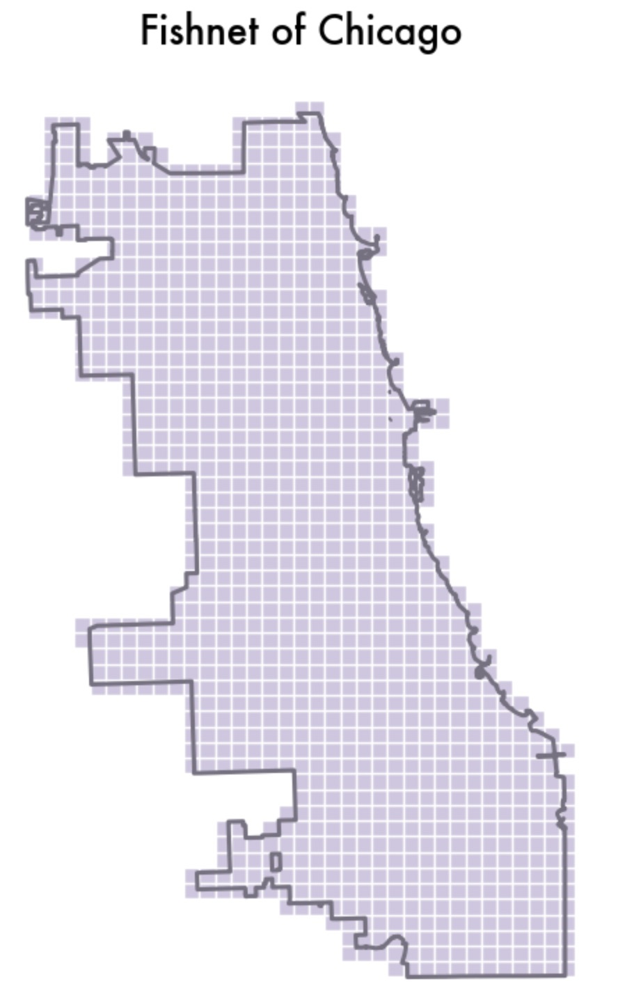

To accurately capture the spatial distribution of assault incidents, a fishnet grid is generated over the study area. This grid divides the region into uniform, equal-sized cells, allowing for a consistent spatial analysis that avoids potential biases introduced by irregular geographic boundaries such as neighborhoods. By using a fishnet grid, the analysis can achieve a finer spatial resolution, enabling the detection of localized assault patterns that might be overlooked when working with larger areas. Additionally, the grid allows for data aggregation within each cell, smoothing out any noise from individual incidents and highlighting broader spatial trends.
The code provided defines a function, create_fishnet(), which generates the fishnet grid by first determining the bounding box of the study area, then creating a series of square cells of a specified size (500 meters in this case). The function also ensures that the grid only includes cells that intersect with the study area’s boundary. The resulting grid is then plotted, with each cell shaded in a light (purple) color, providing a visual representation of the spatial structure used for further analysis. This approach improves the accuracy of subsequent spatial modeling techniques, such as regression and density estimation, by standardizing the area for analysis.
Code
def create_fishnet(boundary, cellsize): bounds = boundary.total_bounds # Get bounding box of the area xmin, ymin, xmax, ymax = bounds cols = np.arange(xmin, xmax + cellsize, cellsize) rows = np.arange(ymin, ymax + cellsize, cellsize) polygons = [ box(x, y, x + cellsize, y + cellsize)for x in cols[:-1] for y in rows[:-1] ] fishnet = gpd.GeoDataFrame(geometry=polygons, crs=boundary.crs)# Intersect with boundary fishnet = fishnet[fishnet.intersects(boundary.unary_union)] fishnet["uniqueID"] =range(1, len(fishnet) +1)return fishnet# Generate fishnetfishnet = create_fishnet(chicagoBoundary, cellsize=2500)# Plot fishnetfig, ax = plt.subplots(figsize=(10, 10))fishnet.plot(ax=ax, edgecolor="white", facecolor="#d0c7e1")chicagoBoundary.boundary.plot(ax=ax, color="#777181", linewidth=2.25)ax.set_title("Fishnet of Chicago", fontsize=20, fontweight="bold")ax.axis("off")plt.show()

Afterwards, to analyze the distribution of assaults across the fishnet grid, a new column, countAssault, is created in the Assault21 DataFrame, where each assault incident is assigned a value of 1. A spatial join is then performed using the gpd.sjoin() function to map each assault incident to its corresponding grid cell based on location. The spatial join is done using the contains operator, which ensures that each assault is assigned to the fishnet cell that contains its point coordinates. This operation results in a new DataFrame, Assault21_net, which aggregates the count of assault incidents per fishnet grid cell by grouping the data by the unique grid cell ID (uniqueID). The final output includes the sum of assaults (countAssault) for each grid cell along with the grid cell geometry.
The resulting DataFrame, Assault21_net, contains the total count of assaults within each fishnet cell, allowing for a more structured and standardized approach to understanding spatial trends. This transformation enables the analysis of assault patterns on a finer spatial scale, avoiding the biases introduced by irregular neighborhood boundaries. The addition of a countAssault column allows for efficient data aggregation, which is essential for performing further spatial analyses, such as identifying hotspots or correlating assault density with other geographic factors.
Code
# Count of Assaults in each fishnet gridAssault21["countAssault"] =1Assault21_net = gpd.sjoin(fishnet, Assault21.to_crs(3435), how="left", op="contains")Assault21_net = Assault21_net.groupby("uniqueID").agg( countAssault=("countAssault", "sum"), geometry=("geometry", "first")).reset_index()#Assault21
In the following steps, the count of assaults (countAssault) in the Assault21_net DataFrame is processed further to handle any missing values. Specifically, the fillna(0) method is used to replace any NaN values in the countAssault column with 0. This ensures that grid cells without any assaults are represented with a count of 0, making the dataset complete and suitable for analysis.
Additionally, two new columns are added to Assault21_net:
uniqueID: A unique identifier is created for each grid cell, ranging from 1 to the total number of grid cells. This ID is useful for distinguishing each fishnet grid cell and will be helpful in further analyses, such as regression modeling or spatial clustering.
cvID: A cross-validation ID (cvID) is generated for each row using the np.random.randint function. The values of cvID are randomly assigned, ensuring that they fall within a range of integers, distributed approximately evenly across all grid cells. The size of each group is set to be around one twenty-fourth of the total number of grid cells, which is typical for cross-validation purposes.
We use the fishnet to then visualize our assault cases again to gain a more accurate picture of the number of cases relative to the area in its given grid. The map shows a few grids with higher assault counts in the north east and south.